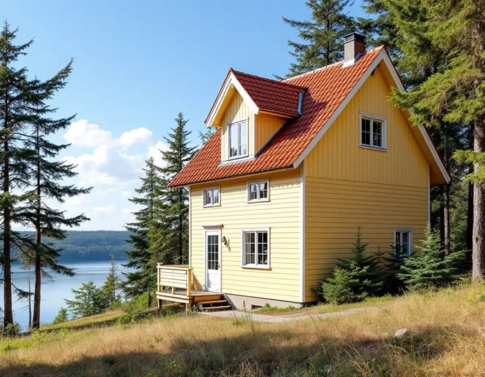
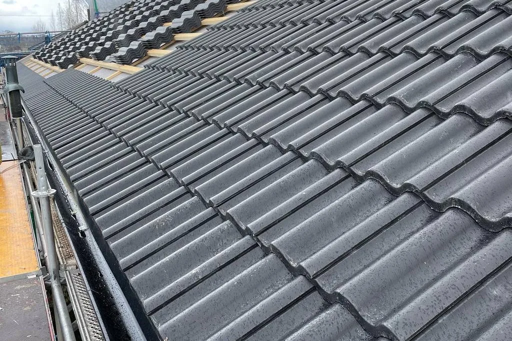
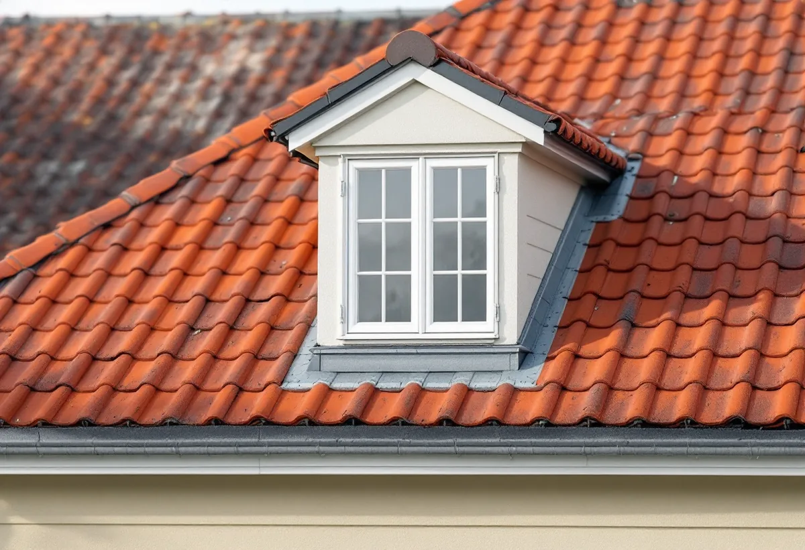

Epok och klassning
Vi tittar på husets ålder, Stadsmuseets karta och eventuella tillbyggnadsplaner.

I stadsdelen Hägersten finns knappt 1 000 småhus, och nästan alla ägs av de boende.
Skicka gärna en bild på taket.
Något blev fel. Kontrollera uppgifterna eller ring 08 12 410 276.
Vi tittar på jobbet på plats innan du får offert.
Du ser vad som ingår och vad det kostar.
Vi drar av ROT direkt och sköter ansökan.
Geal Entreprenad AB, Bromma. Org.nr 559303-7566.

I grannstadsdelen Mälarhöjden, längs Mälarstranden, står utsirade trävillor från 1800-talets andra hälft bredvid vita funkishus från 1930-talet och dagens kataloghus. En takrenovering i Hägersten börjar därför med frågan vilken epok huset tillhör – för det avgör vad som ska ligga på taket.
Stranden mellan Klubbensborg och Lyran var länge en plats för sommarnöjen. Från mitten av 1800-talet tog sommargästerna ångbåten från staden, och flera av de stora, utsirade trävillorna står kvar. Villa Sagatun, ett landmärke för sjöfarande sedan 1881, kom monteringsfärdig från Ekmans snickeri.
När Fridhems villastad fick spårvagn till staden 1913 blev det populärt att bo här året runt. Området planlades 1923 och fick 1926 namnet Mälarhöjden. Sedan dess har varje årtionde lagt till sina hus: strama vita funkisvillor från 1930-talet längs Pettersbergsvägen och kataloghus från senare tid.
Stadens statistik för 2024 visar 994 småhus i stadsdelen Hägersten, varav 955 med äganderätt. Det är alltså oftast du som ägare som bestämmer över taket.

En trävilla från 1800-talets slut kan ha ett brant tak med takfall åt flera håll, kupor och vindskivor med snickarglädje. Här är det detaljerna som tar tid: varje kupa behöver nya beslag, och vindskivorna ska helst lagas och sitta kvar.
Ett funkishus från 1930-talet kan ha ett låglutande eller nästan platt tak med plåt eller papp. Där handlar renoveringen om tätskiktet, skarvarna och hur vattnet leds bort, eftersom Boverket skriver att låglutande tak belastas mer av nederbörd.
Ett kataloghus från 1970- eller 1980-talet kan ha betongpannor. Pannorna kan vara hela medan papp och läkt under är slut, och då räcker det ofta med en omläggning.
Före 1938 var Hägerstensåsen en skogsklädd bergsrygg. När området byggdes ut blev det mest trevånings smalhus på stadens mark, men på den norra delen byggdes även punkthus och villor. De första husen var klara 1939 och de sista 1948.
Åsen ligger högt, och på ett hus i ett utsatt läge tittar vi vid en omläggning särskilt på nock, vindskivor och infästningen av pannorna i takfoten, eftersom det är där vinden tar tag först.
Mälarhöjden har enligt stadens vägledning generösa byggrätter, och många villor har byggts till. Står en tillbyggnad på tur är det klokt att planera taket samtidigt: det är dyrt att lägga om ett tak som rivs några år senare.
Stadens vägledning för villastäderna räknar volym, proportioner och takform till det som har stor påverkan på områdets karaktär – både för huvudbyggnaden och för till- och komplementbyggnader. Det gäller också ett nytt tak: samma lutning och samma typ av material som grannhusen gör att huset fortsätter att höra till gatan. Läs mer om tillbyggnader i vår guide om tillbyggnad.
Staden räknar Mälarhöjden som en kulturhistoriskt värdefull miljö. Ligger ditt hus i ett område eller är en byggnad som är särskilt värdefull gäller utökad lovplikt, och då behövs bygglov även för att byta takmaterial. Stadsmuseets klassificeringskarta ger en första indikation, men ibland behöver Stadsmuseet göra en bedömning.
Lägger du om taket med samma material krävs inget lov. Ändringen ska ändå göras varsamt, så att husets särdrag tas till vara.
På en villa med många takfall och kupor är det sällan själva pannorna som släpper in vatten. Det är anslutningarna: där kupans plåt möter teglet, där två takfall möts i en ränndal och där en tillbyggnad har kopplats på det gamla taket. Mörka ränder på råsponten eller rostiga spikar under en ränndal är tidiga tecken.
Därför börjar vi på vinden när vi besiktar ett tak i Hägersten eller Mälarhöjden. Det vi ser där avgör om det räcker att göra om anslutningarna eller om hela taket ska läggas om.
Vi tittar på husets ålder, Stadsmuseets karta och eventuella tillbyggnadsplaner.
Papp, läkt, råspont och ventilation kontrolleras inifrån.
Omläggning, nytt tätskikt eller nytt material – beskrivet med foton.
Pannor eller plåt tas ner och detaljer mäts upp.
Papp och läkt, eller nytt tätskikt på låglutande tak.
Kupor, vindskivor, nock och rännor görs klart.
Skatteverket räknar reparation och byte av takpannor, underlagspapp och hängrännor på ett småhus som rotarbete när du äger huset och bor i det eller har det som fritidshus. Avdraget är 30 procent av arbetskostnaden, högst 50 000 kronor per person och år och högst 75 000 kronor tillsammans med rutavdrag. Material och resor ger inget avdrag, enligt Skatteverket.
Geal drar avdraget direkt på fakturan. Är ni flera ägare har var och en sitt eget tak för avdraget. Läs mer under rotavdrag för takarbete.
Kostnaden i Hägersten påverkas av takets form och lutning, antalet kupor och takfall, om det är plåt, papp, tegel eller betong, hur mycket underlag som behöver bytas och om en tillbyggnad ska anslutas. Läs mer om vad en takrenovering kostar.
Takbyte, besiktning och plåtarbeten.
Takläggare i Hägersten →Så fungerar en omläggning.
Takrenovering och takomläggning →Det här styr priset.
Vad kostar en takrenovering? →Räkna på takytan och ROT.
Takbyte-kalkylator →Långbro, Herrängen och Långsjö.
Takrenovering i Älvsjö →Radhus i grupper i Bredäng, Sätra och Vårberg.
Takrenovering i Skärholmen →Trädgårdsstäder, tegel och funkistak.
Takrenovering i Bromma →Eller ring 08 12 410 276, mån–fre 08–17.
Skicka gärna en bild på taket.
Något blev fel. Kontrollera uppgifterna eller ring 08 12 410 276.